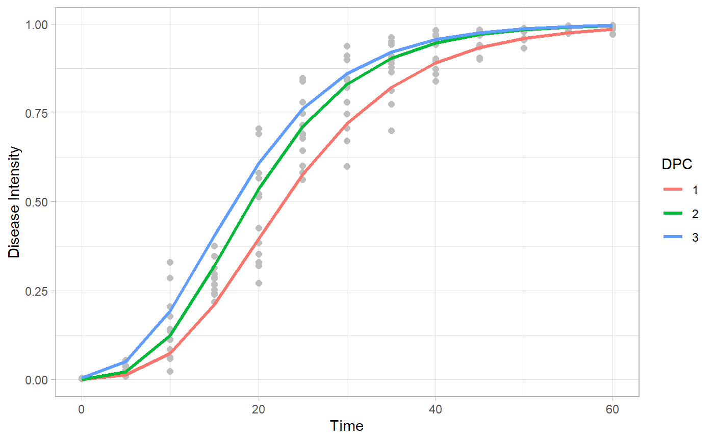
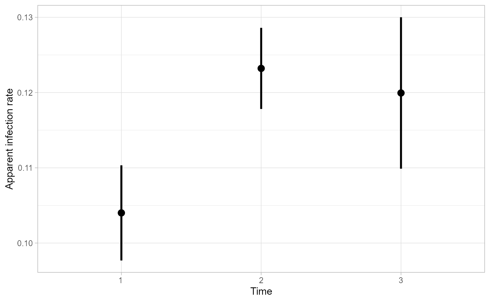

Fitting disease progress curves to classic epidemiological models
Kaique S Alves
2020-09-03
Source:vignettes/fitting.Rmd
fitting.RmdIntroduction
Use epifitter to fit the classic epidemiological models, Exponential, Monomolecular, Logistic, Gompertz, to your disease progress curves (DPCs). This package is optimized to fit theses models using data linearization approach using the function fit_lin and nonlinear regression using the functions fit_nlin and fit_nlin2. And if you have tons of DPCs in your dataset, I would recommend to you to use the multi_fitter() function, which can fit all theses model to each of your DPCs.
In this vignette I will demonstrate the main features about these functions, using them in some simulated data. I hope you appreciate it. Have fun!
Hands on
Packages
First we have to load some packages. If you don’t have any of theses, please install it with the function install.packages().
Data
To demonstrate the fitting procedure, first we need some data. Let’s use the function sim_logistic to do that. You can check on ?sim_logistic to see details about this function.
dpc_data <- sim_logistic( N = 100, y0 = 0.01, dt = 5, r = 0.1, alpha = 0.2, n = 7 ) head(dpc_data)
## replicates time y random_y
## 1 1 0 0.01000000 0.01031702
## 2 1 5 0.01638216 0.01859204
## 3 1 10 0.02672677 0.03149177
## 4 1 15 0.04331509 0.06702933
## 5 1 20 0.06946352 0.06202469
## 6 1 25 0.10958806 0.13625658
Using fit_lin() to fit DPCs using data linearization
The fit_lin() function fits DPCs to classic epidemiological models using linearization of the disease intensity. To use this function you need to provide the following arguments:
-
time: A vector containing time steps of the DPCs. -
y: A vector with the disease intensity data.
In our data dpc_data we can call these vectors using the $ operator, like bellow:
f_lin <- fit_lin(time = dpc_data$time, y = dpc_data$random_y) f_lin
## Results of fitting population models
##
## Stats:
## CCC r_squared RSE
## Logistic 0.9981 0.9961 0.1904
## Gompertz 0.9780 0.9570 0.4650
## Monomolecular 0.9369 0.8813 0.6234
## Exponential 0.9126 0.8393 0.5902
##
## Infection rate:
## Estimate Std.error Lower Upper
## Logistic 0.09998100 0.03031572 0.09895593 0.09895593
## Gompertz 0.07193012 0.07405092 0.06942622 0.06942622
## Monomolecular 0.05572909 0.09927316 0.05237234 0.05237234
## Exponential 0.04425191 0.09398650 0.04107393 0.04107393
##
## Initial inoculum:
## Estimate Lower Upper
## Logistic 1.032476e-02 9.730137e-03 1.095532e-02
## Gompertz 1.843891e-05 3.307971e-06 8.134217e-05
## Monomolecular -1.975330e+00 -2.620327e+00 -1.445246e+00
## Exponential 3.104005e-02 2.577791e-02 3.737638e-02So what?
Note the first part of the output we have the Stats for each model. In this section are shown the Lin’s concordance correlation coefficient CCC (Lin 2000) for each, the coefficient of determination r_squared (R2) and the residual standard deviation RSE. In this output the models are sorted by from the higher CCC to the lower CCC, there is, from the more accurate to the less accurate model. In our case the more accurate model is the Logistic model.
Right above is presented the sections infection rate and Initial inoculum . There are presented the estimated values for each models and their associated related statistics. They are also sorted by CCC.
If you want to give a close look at the parameters you can call the stats_all using the $ operator.
head(f_lin$stats_all)
## # A tibble: 4 x 12
## best_model model r r_se r_ci_lwr r_ci_upr r_squared RSE CCC
## <int> <chr> <dbl> <dbl> <dbl> <dbl> <dbl> <dbl> <dbl>
## 1 1 Logi~ 0.1000 0.0303 0.0990 0.101 0.996 0.190 0.998
## 2 2 Gomp~ 0.0719 0.0741 0.0694 0.0744 0.957 0.465 0.978
## 3 3 Mono~ 0.0557 0.0993 0.0524 0.0591 0.881 0.623 0.937
## 4 4 Expo~ 0.0443 0.0940 0.0411 0.0474 0.839 0.590 0.913
## # ... with 3 more variables: y0 <dbl>, y0_ci_lwr <dbl>, y0_ci_upr <dbl>Predictions
You can see the model prediction by calling the data using the $ operator like above. In there you’ll find the data used for fitting (y) and prediction for each model (predicted). The column linearized contains the linearization of y for each model. And finally we have the residual in the column residual.
head(f_lin$data)
## time y model linearized predicted residual
## 1 0 0.01031702 Exponential -4.573961 0.03104005 -0.020723039
## 2 5 0.01859204 Exponential -3.985022 0.03872704 -0.020134996
## 3 10 0.03149177 Exponential -3.458029 0.04831768 -0.016825908
## 4 15 0.06702933 Exponential -2.702625 0.06028342 0.006745904
## 5 20 0.06202469 Exponential -2.780223 0.07521245 -0.013187752
## 6 25 0.13625658 Exponential -1.993216 0.09383860 0.042417980
Plonting using the function plot_fit()
Using the function plot_fit() you create a panel with the predictions for each model. You can also add some features of the ggplot2 arsenal like themes and axis labels.
plot_fit(f_lin, point_size = 2, line_size = 1) + theme_minimal()+ labs(x = "Time", y = "Disease intensity")

You can also select the model(s) you want to plot in the argument models. Here I selected just the Logistic model.
plot_fit(f_lin, point_size = 2, line_size = 1, models = "Logistic") + theme_minimal()+ labs(x = "Time", y = "Disease intensity")

Using fit_nlin()
The fit_nlin() offers the possibility to fit models using nonlinear regression using the Levenberg-Marquardt algorithm. It works like fit_lin(), you can modify the starting values for the parameter y0 and r in the starting_par argument. The output interpretation is analogous to the fit_lin().
NOTE: If you encounter messages saying “matrix at initial parameter estimates”, try to modify the starting values for the parameters, that might solve the problem.
Plot_fit also works for this function output.
f_nlin <- fit_nlin(time = dpc_data$time, y = dpc_data$random_y, starting_par = list(y0 = 0.01, r = 0.03)) f_nlin
## Results of fitting population models
##
## Stats:
## CCC r_squared RSE
## Logistic 0.9982 0.9964 0.0238
## Gompertz 0.9958 0.9930 0.0363
## Monomolecular 0.9162 0.8692 0.1499
## Exponential 0.8893 0.8277 0.1701
##
## Infection rate:
## Estimate Std.error Lower Upper
## Logistic 0.10039302 0.001384788 0.09765604 0.09765604
## Gompertz 0.07031715 0.001429432 0.06749193 0.06749193
## Monomolecular 0.02356200 0.001095458 0.02139688 0.02139688
## Exponential 0.01951794 0.001007851 0.01752596 0.01752596
##
## Initial inoculum:
## Estimate Std.error Lower Upper
## Logistic 9.840342e-03 6.382900e-04 8.578787e-03 1.110190e-02
## Gompertz 1.211655e-07 1.231948e-07 -1.223241e-07 3.646551e-07
## Monomolecular -2.379647e-01 3.575995e-02 -3.086428e-01 -1.672866e-01
## Exponential 1.783610e-01 1.464665e-02 1.494125e-01 2.073095e-01plot_fit(f_nlin)+ theme_minimal()

Using fit_nlin2()
It is not always that a DPC reaches the maximum 100% intensity. When this does happens we often wont to estimate this value of maximum disease intensity and we usually denote it as K. Using the function fin_lin2 we can fit the models and estimate the maximum disease intensity for your DPCs
Let’s modify our data to have a maximum disease intensity of 0.8 (80%). We do that just multiplying the data to 0.8.
dpc_data2 = dpc_data %>% mutate(random_y = random_y*0.8)
Now we just put the data into the fit_nlin2() function. Here you can modify the stating parameter as well.
NOTE: The exponential model is left aside here, becouse it doesn’t have a maximum asymptote.
See that the estimated value of K is just what we were expecting 0.8!
f_nlin2 <- fit_nlin2(time = dpc_data2$time, y = dpc_data2$random_y) f_nlin2
## Results of fitting population models
##
## Stats:
## CCC r_squared RSE
## Logistic 0.9982 0.9964 0.0191
## Gompertz 0.9966 0.9939 0.0264
## Monomolecular 0.9695 0.9408 0.0774
##
## Infection rate:
## Estimate Std.error Lower Upper
## Logistic 0.100376767 0.001699928 0.097016731 0.097016731
## Gompertz 0.062764101 0.001686864 0.059429888 0.059429888
## Monomolecular 0.004318702 0.001557153 0.001240871 0.001240871
##
## Initial inoculum:
## Estimate Std.error Lower Upper
## Logistic 7.877001e-03 5.859176e-04 6.718890e-03 9.035111e-03
## Gompertz 3.661695e-06 2.947223e-06 -2.163713e-06 9.487103e-06
## Monomolecular -1.077944e-01 1.813315e-02 -1.436359e-01 -7.195285e-02
##
## Maximum disease intensity:
## Estimate Std.error Lower Upper
## Logistic 0.8000575 0.003500865 0.7931378 0.8069772
## Gompertz 0.8344667 0.006708684 0.8212065 0.8477269
## Monomolecular 2.7692824 0.841591083 1.1058145 4.4327504
Using multi_fitter
Okay, now that we saw how to fit models to single epidemics, we are ready to see how to do it for more the one DPC. The epifitter also offers the option to you fit the models to various DPCs using the function multi_fitter(). You just need to put all your DPC data into a single data.frame and identify each one with strata columns.
Data
Here I will create a data.frame containing three DPCs. Note that the I change the y0 and r parameter to get different DPCs. I used the Gompertz model to simulate these data, so we expect that the best model would be the same, just like we saw above.
I called the strata column ‘DPC’, so in it that we have the DPC 1, 2 and 3.
epi1 <- sim_gompertz(N = 60, y0 = 0.001, dt = 5, r = 0.1, alpha = 0.4, n = 4) epi2 <- sim_gompertz(N = 60, y0 = 0.001, dt = 5, r = 0.12, alpha = 0.4, n = 4) epi3 <- sim_gompertz(N = 60, y0 = 0.003, dt = 5, r = 0.12, alpha = 0.4, n = 4) multi_epidemic <- bind_rows(epi1, epi2, epi3, .id = "DPC") head(multi_epidemic)
## DPC replicates time y random_y
## 1 1 1 0 0.00100000 0.001050548
## 2 1 1 5 0.01515505 0.007315233
## 3 1 1 10 0.07878459 0.074262980
## 4 1 1 15 0.21411521 0.136082945
## 5 1 1 20 0.39266393 0.455707389
## 6 1 1 25 0.56723412 0.645078397“Multi fitting”
To fit the model to all your DPCs, use the function multi_fitter.
For that, inform the column in which are you time steps in the time_col argument.
In the intensity_col inform the name of the column where is your disease intensity data (incidence, severity, …).
Inform you data.frame in the data argument.
In strata_cols you have to inform the name of your strata column.In this example its name is “DPC”, but you can have more than one strata column, you can inform that putting the columns names in a vector like this c("strata1",strata2").
Informing only this arguments, it fit the models using linear regression of the linearized data, like in fit_lin().
You can see the parameters calling Parameters using the $ operator. The column best model gives the order of higher accuracy of the model.
multi_fit <- multi_fitter(time_col = "time", intensity_col = "random_y", data = multi_epidemic, strata_cols = "DPC") head(multi_fit$Parameters)
## DPC best_model model r r_se r_ci_lwr r_ci_upr
## 1 1 1 Gompertz 0.09800471 0.10610049 0.09197707 0.10403234
## 2 1 2 Monomolecular 0.07037473 0.10728458 0.06427982 0.07646963
## 3 1 3 Logistic 0.15574904 0.29305701 0.13910029 0.17239780
## 4 1 4 Exponential 0.08537431 0.32632860 0.06683538 0.10391325
## 5 2 1 Gompertz 0.12488961 0.08759366 0.11991336 0.12986586
## 6 2 2 Monomolecular 0.09891079 0.11770602 0.09222384 0.10559774
## r_squared RSE CCC y0 y0_ci_lwr y0_ci_upr
## 1 0.9552180 0.4048537 0.9770962 0.002368252 0.0005633820 0.007557173
## 2 0.9149457 0.4093719 0.9555839 -0.661982527 -1.0616334646 -0.339804562
## 3 0.8759510 1.1182343 0.9338741 0.012271436 0.0068491638 0.021891733
## 4 0.6311507 1.2451906 0.7738717 0.020648296 0.0107207652 0.039768817
## 5 0.9807030 0.3342361 0.9902575 0.001106984 0.0002989121 0.003319003
## 6 0.9463907 0.4491375 0.9724571 -1.091670401 -1.6495305529 -0.651268019You can also see the data calling Data.
head(multi_fit$Data)
## DPC time y model linearized predicted residual
## 1 1 0 0.001050548 Exponential -6.8584429 0.02064830 -0.01959775
## 2 1 5 0.007315233 Exponential -4.9177964 0.03164260 -0.02432737
## 3 1 10 0.074262980 Exponential -2.6001427 0.04849089 0.02577209
## 4 1 15 0.136082945 Exponential -1.9944907 0.07431015 0.06177280
## 5 1 20 0.455707389 Exponential -0.7859044 0.11387702 0.34183037
## 6 1 25 0.645078397 Exponential -0.4383834 0.17451150 0.47056689If you rather use nonlinear regression, set TRUE in the nlim argument.
multi_fit2 <- multi_fitter(time_col = "time", intensity_col = "random_y", data = multi_epidemic, strata_cols = "DPC", nlin = TRUE)
## Warning in log(y0/1): NaNs produzidos
## Warning in log(y0/1): NaNs produzidos
## Warning in log(y0/1): NaNs produzidos
## Warning in log(y0/1): NaNs produzidos
## Warning in log(y0/1): NaNs produzidos
## Warning in log(y0/1): NaNs produzidos
## Warning in log(y0/1): NaNs produzidos
## Warning in log(y0/1): NaNs produzidoshead(multi_fit2$Parameters)
## DPC model y0 y0_se r r_se df
## 1 1 Gompertz 0.001296104 0.0010449015 0.10432432 0.005483153 50
## 2 1 Logistic 0.033273195 0.0073210622 0.14977957 0.009582405 50
## 3 1 Monomolecular -0.174783376 0.0454597891 0.04497860 0.002856953 50
## 4 1 Exponential 0.248422333 0.0319258360 0.02610245 0.002689828 50
## 5 2 Gompertz 0.001541144 0.0009968429 0.12248049 0.005356832 50
## 6 2 Logistic 0.034609149 0.0064831980 0.17494019 0.009646537 50
## CCC r_squared RSE y0_ci_lwr y0_ci_upr r_ci_lwr
## 1 0.9883460 0.9769823 0.05824205 -0.0008026427 0.003394850 0.09331108
## 2 0.9840874 0.9712168 0.06779563 0.0185684089 0.047977981 0.13053275
## 3 0.9484335 0.9135407 0.11640121 -0.2660920496 -0.083474702 0.03924024
## 4 0.8436240 0.7597141 0.19148045 0.1842974042 0.312547262 0.02069978
## 5 0.9931240 0.9864008 0.04485695 -0.0004610733 0.003543362 0.11172097
## 6 0.9898858 0.9816340 0.05411253 0.0215872624 0.047631035 0.15556455
## r_ci_upr best_model
## 1 0.11533755 1
## 2 0.16902640 2
## 3 0.05071696 3
## 4 0.03150513 4
## 5 0.13324000 1
## 6 0.19431583 2Estimate K?
You might want to estimate K for your data. To do that, set nlin = TRUE and estimate_K = TRUE.
NOTE: If you do not set both
TRUE,Kwill not be estimated, becausenlindefaut isFALSE. Also remember that when estimating K, we don’t fit the Exponential model.
multi_fit_K <- multi_fitter(time_col = "time", intensity_col = "random_y", data = multi_epidemic, strata_cols = "DPC", nlin = T, estimate_K = T)
## Warning in log(y0/K): NaNs produzidos
## Warning in log(y0/K): NaNs produzidos
## Warning in log(y0/K): NaNs produzidos
## Warning in log(y0/K): NaNs produzidos
## Warning in log(y0/K): NaNs produzidos
## Warning in log(y0/K): NaNs produzidos
## Warning in log(y0/K): NaNs produzidos
## Warning in log(y0/K): NaNs produzidos
## Warning in log(y0/K): NaNs produzidoshead(multi_fit_K$Parameters)
## DPC model y0 y0_se r r_se K
## 1 1 Gompertz 0.0005698342 0.0006781808 0.11213703 0.008623058 0.9766553
## 2 1 Logistic 0.0226307761 0.0062503894 0.17367817 0.013433391 0.9481202
## 3 1 Monomolecular -0.1217808332 0.0380608030 0.02501109 0.004681090 1.3868889
## 4 2 Gompertz 0.0014281111 0.0010873922 0.12342920 0.007089167 0.9974371
## 5 2 Logistic 0.0300047128 0.0063903701 0.18563449 0.011819339 0.9773550
## 6 2 Monomolecular -0.1263491638 0.0366498005 0.03599318 0.004569167 1.2224396
## K_se df CCC r_squared RSE y0_ci_lwr y0_ci_upr
## 1 0.01808597 49 0.9886055 0.9774418 0.05796747 -0.0007930212 0.001932690
## 2 0.01567768 49 0.9862033 0.9739695 0.06301300 0.0100701483 0.035191404
## 3 0.14565885 49 0.9684404 0.9388119 0.09546504 -0.1982668804 -0.045294786
## 4 0.01214786 49 0.9931213 0.9864084 0.04529222 -0.0007570854 0.003613308
## 5 0.01203870 49 0.9903700 0.9822796 0.05294823 0.0171627833 0.042846642
## 6 0.07016895 49 0.9732815 0.9479535 0.08856646 -0.1999996953 -0.052698632
## r_ci_lwr r_ci_upr K_ci_lwr K_ci_upr best_model
## 1 0.09480834 0.12946571 0.9403102 1.0130005 1
## 2 0.14668276 0.20067358 0.9166148 0.9796257 2
## 3 0.01560409 0.03441809 1.0941765 1.6796013 3
## 4 0.10918298 0.13767541 0.9730251 1.0218492 1
## 5 0.16188264 0.20938635 0.9531623 1.0015477 2
## 6 0.02681110 0.04517527 1.0814298 1.3634493 3Make graphics to compare curves and parameters
Use ggplot2 to produce elegant data visualizations of the model curves and the estimated parameters.
Curves
The original data and the predicted values for each model are in multi_fit$Data. See how we can plot the data and the predicted curves for each model and each DPC.
multi_fit$Data %>% ggplot(aes(time, predicted, color = DPC)) + geom_point(aes(time, y), color = "gray") + geom_line(size =1) + facet_grid(DPC~model, scales = "free_y") + theme_light()+ coord_cartesian(ylim = c(0,1))

You can filter the data for specific model and plot it. To filter a model, use the function filter() from the dplyr package.
multi_fit$Data %>% filter(model == "Gompertz") %>% ggplot(aes(time, predicted, color = DPC)) + geom_point(aes(time, y), color = "gray", size = 2 ) + geom_line(size = 1.2) + theme_light() + labs( x = "Time", y = "Disease Intensity" )

Apparent infection rate
Access the estimated parameters calling multi_fit$Parameters and plot too.
multi_fit$Parameters %>% filter(model == "Gompertz") %>% ggplot(aes(DPC, r)) + geom_point(size = 3) + geom_errorbar(aes(ymin = r_ci_lwr, ymax = r_ci_upr), width = 0, size = 1 ) + labs( x = "Time", y = "Apparent infection rate" ) + theme_light()
